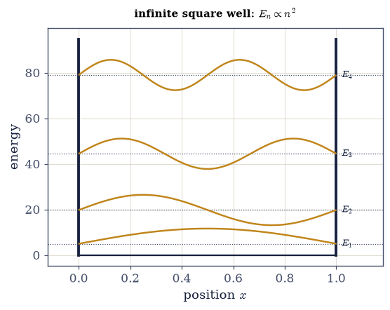
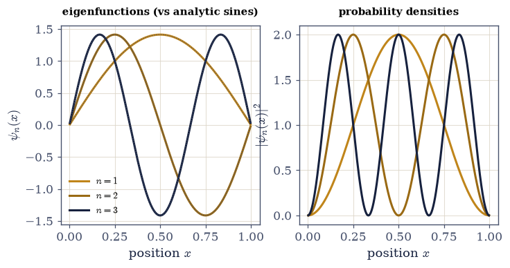
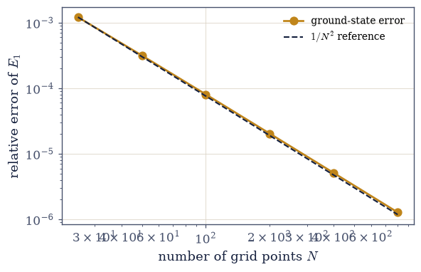
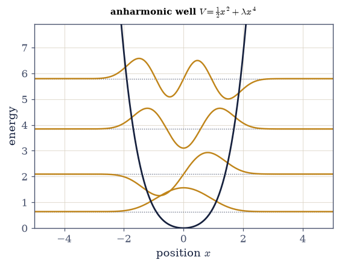

6.10 The Schrödinger Equation as a PDE, Solved on a Computer#
Notebook overview#
Volume VI has made one claim more than any other: quantum mechanics is linear algebra. In this
notebook that claim stops being a slogan and becomes a literal method for solving real, continuous
systems. The time-independent Schrödinger equation \(\hat H\psi=E\psi\) is, word for word, the
eigenvalue problem of a Hermitian operator — the same problem we solved for a \(2\times2\) spin operator
in §6.2. The only new step is to write that operator as a matrix, and the position representation of
§6.9 tells us exactly how: put \(x\) on a grid, approximate the second derivative by a finite-difference
stencil, and the Schrödinger operator becomes a finite matrix we hand to numpy.linalg.eigh. Its
eigenvalues are the allowed energies; its eigenvectors are the stationary states.
The discipline of computational physics is to never trust a number you have not checked, so we begin
with the one problem that has a clean exact answer — the infinite square well, \(E_n=n^2\pi^2\hbar^2
/2mL^2\) — and validate the method against it from three angles: the energies match to several digits,
the eigenfunctions match the analytic sines \(\sqrt{2/L}\sin(n\pi x/L)\) to machine precision, and the
computed states are orthonormal (the eigh guarantee of §6.2, now producing wave functions). We
then watch the energy error fall as \(1/N^2\) with the grid resolution — the second-order accuracy of
the finite-difference stencil, the floating-point-and-discretization sensibility of Volume 0 in the
quantum setting — and are honest about where the method strains (the highest computed levels are
always the least trustworthy).
Then comes the payoff. Nothing in the recipe used the square well’s analytic solution: it needs only \(V(x)\) on a grid. So the same three lines — build the kinetic stencil, add the diagonal potential, diagonalize — solve any one-dimensional potential, including those with no closed form. We turn them loose on an anharmonic well and read its spectrum straight off the screen. This is the engine for the rest of Movement II: bound states (§6.11), the harmonic oscillator (§6.12), and — once we restore the time dependence — wave packets in motion (§6.13).
As in every Volume VI notebook, each exercise opens with a crystal-clear statement and enumerated parts, each naming the exact operation — the \((1,-2,1)/dx^2\) second-difference stencil, numpy.diag
to assemble the tridiagonal kinetic matrix, and numpy.linalg.eigh (the symmetric/Hermitian solver,
returning sorted real eigenvalues and orthonormal eigenvectors).
Conventions. We set \(\hbar=1\) and \(m=1\). The grid is the interior of \([0,L]\) (or \([-L/2,L/2]\) for confining potentials): \(N\) points with spacing \(dx\), and the Dirichlet boundary condition \(\psi=0\) at the walls is built in by leaving the boundary points off the grid (a confining \(V\) instead needs a box large enough that \(\psi\) has decayed). Eigenfunctions from
numpy.linalg.eighare normalized in the discrete sense; we divide by \(\sqrt{dx}\) so that \(\int|\psi|^2dx=1\). For large gridsscipy.linalg.eigh_tridiagonalis the efficient specialized solver. See Griffiths and Sakurai & Napolitano (the square well); Giordano & Nakanishi (the matrix method); and Notebooks §6.2 (eigh, the eigenvalue problem), §6.7 (stationary states), §6.9 (the position representation), and Volume 0 (finite differences, discretization error).
Theory in brief#
The time-independent Schrödinger equation as an eigenproblem#
Separating the time dependence (the stationary states \(e^{-iEt/\hbar}\) of §6.7) leaves the time-independent Schrödinger equation, an eigenvalue problem for a Hermitian operator,
Its eigenvalues are the allowed energies and its eigenfunctions the stationary states. “Solving quantum mechanics” for a potential means diagonalizing this operator (§6.2).
Discretizing the Hamiltonian into a matrix#
Put \(x\) on a grid of \(N\) points with spacing \(dx\). The second derivative becomes the finite-difference stencil, a tridiagonal matrix,
So \(\hat H\) becomes a real symmetric matrix (Hermitian), and numpy.linalg.eigh returns its
sorted eigenvalues (the energies) and orthonormal eigenvectors (the stationary states, normalized by
dividing by \(\sqrt{dx}\)). The Dirichlet condition \(\psi=0\) at hard walls is built in by restricting to
the interior grid.
The infinite square well: the validation#
For \(V=0\) in \([0,L]\) with infinite walls, the exact spectrum and eigenfunctions are
The ground-state energy is nonzero — the zero-point energy: confinement forces motion, the uncertainty principle of §6.9 in action. We validate the numerics against all of this.
Convergence and its limits#
The finite-difference second derivative is second-order accurate, so the energy error falls as
Higher levels (more wiggly eigenfunctions) need more points per wavelength and converge later — the highest computed eigenvalues are always the least trustworthy, a resolution diagnostic to state honestly.
The general method#
Nothing in the recipe used the analytic solution — it needs only \(V(x)\) on a grid,
so the same three steps solve any one-dimensional potential, including those with no closed form. This is the payoff: the computer solves problems pencil-and-paper cannot.
Setup#
import matplotlib.pyplot as plt
import numpy as np
from ecp import draw, validate
ACCENT, INK, SOFT = draw.ACCENT, draw.INK, draw.SOFT
RED = "#c1121f"
HBAR = 1.0 # ℏ = 1
MASS = 1.0 # m = 1
# The discretized Hamiltonian: the kinetic energy is −(ℏ²/2m) times the (1,−2,1)/dx² second-difference
# stencil (a tridiagonal matrix assembled with numpy.diag), and the potential is diagonal. numpy.linalg.eigh
# returns SORTED real eigenvalues (energies) and orthonormal eigenvectors (stationary states); we divide
# the eigenvectors by √dx so that ∫|ψ|²dx = 1. (scipy.linalg.eigh_tridiagonal is the efficient option.)
def hamiltonian(x, V):
"""Assemble the discretized Hamiltonian matrix $H$ on the grid ``x`` {eq}`eq-discretize`.
The kinetic term is $-(\\hbar^2/2m)$ times the $(1,-2,1)/dx^2$ finite-difference Laplacian — a
tridiagonal matrix built with ``numpy.diag`` (``-2`` on the main diagonal, ``1`` on the two
off-diagonals) — and the potential is the diagonal matrix $\\mathrm{diag}\\,V(x_i)$. The result is a
real symmetric (Hermitian) matrix; the Dirichlet walls $\\psi=0$ are built in by using the interior
grid only.
Parameters
----------
x : numpy.ndarray
A uniform interior grid (boundary points excluded).
V : numpy.ndarray
The potential sampled on ``x``.
Returns
-------
numpy.ndarray
The $N\\times N$ Hamiltonian matrix.
"""
n = len(x)
dx = x[1] - x[0]
laplacian = (
np.diag(-2 * np.ones(n))
+ np.diag(np.ones(n - 1), 1)
+ np.diag(np.ones(n - 1), -1)
) / dx**2
kinetic = -(HBAR**2 / (2 * MASS)) * laplacian
return kinetic + np.diag(V)
def solve(x, V):
"""Diagonalize the Hamiltonian: return the energies and normalized stationary states {eq}`eq-tise`.
Builds $H$ with :func:`hamiltonian` and diagonalizes with ``numpy.linalg.eigh`` (sorted real
eigenvalues, orthonormal eigenvectors). The eigenvectors are divided by $\\sqrt{dx}$ so each
column is a wave function with $\\int|\\psi_n|^2dx=1$.
Parameters
----------
x : numpy.ndarray
The interior grid.
V : numpy.ndarray
The potential on the grid.
Returns
-------
energies : numpy.ndarray
The eigenvalues (energies), ascending.
states : numpy.ndarray
Column ``n`` is the normalized stationary state $\\psi_n(x)$.
"""
energies, states = np.linalg.eigh(hamiltonian(x, V))
dx = x[1] - x[0]
return energies, states / np.sqrt(dx)
def plot_levels(ax, x, V, energies, states, n_levels=4, scale=None):
"""Plot the potential with energy levels and eigenfunctions drawn at their energies — a plotting helper.
Draws $V(x)$, a horizontal line at each $E_n$, and the eigenfunction $\\psi_n(x)$ scaled and offset
to sit at height $E_n$ — the standard textbook picture of a spectrum.
"""
ax.plot(x, V, color=INK, lw=1.8, zorder=3)
if scale is None:
gaps = np.diff(energies[: n_levels + 1])
scale = 0.5 * np.median(gaps) / np.max(np.abs(states[:, 0]))
for n in range(n_levels):
ax.axhline(energies[n], color=SOFT, lw=0.8, ls=":", zorder=1)
psi = states[:, n]
if np.trapezoid(psi, x) < 0:
psi = -psi
ax.plot(x, energies[n] + scale * psi, color=ACCENT, lw=1.6, zorder=2)
Exercise 1 — Building the Hamiltonian matrix#
For a given grid and potential, construct the discretized Hamiltonian matrix \(H=-\tfrac{\hbar^2}{2m}\tfrac{1}{dx^2}\,\mathrm{tridiag}(1,-2,1)+\mathrm{diag}\,V\), and confirm it is real symmetric (Hermitian) Eq. 435, Eq. 436.
Set up the interior grid (\(N\) points, spacing \(dx\)).
Build the kinetic matrix from the \((1,-2,1)/dx^2\) stencil with
numpy.diag(\(-2\) on the main diagonal, \(1\) on the off-diagonals), times \(-\hbar^2/2m\) (thehamiltonianhelper).Add the diagonal potential
numpy.diag(V).Confirm \(H\) is real (
numpy.isreal) and symmetric (\(H=H^{\mathsf T}\),numpy.allclose(H, H.T)) — a Hermitian operator (§6.2). Frame: the Schrödinger operator is a matrix.
Write this one yourself — the implementation is the lesson.
H shape (400, 400), real True, symmetric H = Hᵀ True
diagonal entries = −ℏ²/2m · (−2/dx²) + V = 160801.00; off-diagonal = −ℏ²/2m · (1/dx²) = -80400.50
Validation 1#
✓ the discretized Hamiltonian is a real symmetric (Hermitian) matrix: −(ℏ²/2m)·(1,−2,1)/dx² stencil plus diag(V)
True
Exercise 2 — The infinite square well spectrum#
Solve the infinite square well numerically and compare the energies to the exact spectrum \(E_n=n^2\pi^2\hbar^2/2mL^2\). Confirm the lowest levels match, and note the nonzero ground-state energy Eq. 437.
With \(V=0\) inside and Dirichlet walls (the interior grid of Exercise 1), diagonalize \(H\) with
numpy.linalg.eighvia thesolvehelper.Take the lowest five eigenvalues.
Compare to \(E_n=n^2\pi^2\hbar^2/2mL^2\) for \(n=1,\dots,5\) and report the relative errors.
Note \(E_1>0\) — the zero-point energy: a confined particle cannot be at rest (the uncertainty principle of §6.9). Frame: the validation against an exact answer.
n E_numeric E_exact rel. error
1 4.93478 4.93480 5.11e-06
2 19.73880 19.73921 2.05e-05
3 44.41118 44.41322 4.60e-05
4 78.95037 78.95684 8.18e-05
5 123.35428 123.37006 1.28e-04
ground-state energy E_1 = 4.93478 > 0 (zero-point energy: confinement forces motion)
Validation 2#
✓ the infinite square well spectrum is Eₙ = n²π²ℏ²/2mL² (validated against the exact answer) [max|Δ| = 0.0157746 (rtol=0.001, atol=1e-09)]
True
findfont: Failed to find font weight 600, now using 700.
findfont: Failed to find font weight 600, now using 700.

Fig. 441 The infinite square well, solved. The flat potential (\(V=0\) between hard walls, ink) with the lowest four computed energy levels drawn as dotted lines and their stationary states \(\psi_n(x)\) (amber) riding at their energies. The levels climb as \(E_n\propto n^2\) — the spacing widens with \(n\) — and the lowest, \(E_1=\pi^2\hbar^2/2mL^2\), sits above the floor of the well: a confined particle has irreducible zero-point motion. Every number here came from handing a tridiagonal matrix to numpy.linalg.eigh, the same routine that diagonalized a spin operator in Movement 0; the wave functions are just its eigenvectors.#
Exercise 3 — The eigenfunctions#
Confirm the computed eigenfunctions are the analytic sines \(\sqrt{2/L}\sin(n\pi x/L)\) and that
they are orthonormal — the eigh orthonormality of §6.2, now as wave functions
Eq. 437.
Extract \(\psi_n(x)\) from the
solveoutput (already normalized by \(\sqrt{dx}\)).Fix the sign convention (eigenvectors are defined up to a sign — flip so the overlap with the analytic form is positive).
Compare to \(\sqrt{2/L}\sin(n\pi x/L)\) with
numpy.max(numpy.abs(...)).Verify orthonormality \(\langle\psi_i|\psi_j\rangle=\delta_{ij}\) — the discrete inner product
(states.T @ states)·dxis the identity to machine precision (theeighguarantee). Frame:eighorthonormality, now producing wave functions.
max|ψ_numeric − ψ_analytic| for n=1,2,3: 6.57e-13 (machine precision)
orthonormality max|⟨ψ_i|ψ_j⟩ − δ_ij|: 1.78e-15 (the eigh guarantee, now wave functions)
Validation 3#
✓ the eigenfunctions are √(2/L)sin(nπx/L) and orthonormal (⟨ψ_i|ψ_j⟩=δ_ij to machine precision) [max|Δ| = 6.5728e-13 (rtol=1e-06, atol=1e-09)]
True

Fig. 442 The stationary states and their densities. Left: the first three eigenfunctions \(\psi_n(x)\) of the square well — the computed states (amber) lie exactly on the analytic sines \(\sqrt{2/L}\sin(n\pi x/L)\) (dotted), with \(n-1\) interior nodes apiece. Right: the probability densities \(|\psi_n(x)|^2\), the likelihood of finding the particle at each point. These are nothing but the eigenvectors numpy.linalg.eigh returned — orthonormal to machine precision, exactly as they were for the spin operators of Movement 0 — read now as functions of position. Diagonalization did not change; only the size of the matrix did.#
Exercise 4 — Convergence with grid resolution#
Study how the ground-state energy error depends on the number of grid points \(N\), and confirm the second-order (\(\sim1/N^2\)) convergence of the finite-difference method Eq. 438.
Solve the square well for \(N=25,50,100,\dots,800\) (the
solvehelper at each).Compute the relative error of the ground-state energy \(E_1\) against the exact \(\pi^2\hbar^2/2mL^2\).
Plot the error versus \(N\) on log–log axes and confirm the slope is \(-2\) (a \(1/N^2\) reference line).
Note that higher levels converge later — the wigglier the eigenfunction, the more points per wavelength it needs. Frame: discretization error, controllable and predictable (Volume 0).
N relative error of E_1
25 1.22e-03
50 3.16e-04
100 8.06e-05
200 2.04e-05
400 5.11e-06
800 1.28e-06
log–log slope = -1.980 (≈ −2: second-order convergence, error ~ 1/N²)
Validation 4#
✓ the finite-difference method converges at second order: the ground-state energy error scales as ~1/N² [got -1.97953 vs expected -2 (rtol=1e-06)]
True

Fig. 443 Second-order convergence. The relative error in the computed ground-state energy of the square well against the number of grid points \(N\), on log–log axes (amber dots), with a \(1/N^2\) reference slope (dashed). The points fall on a line of slope \(-2\): doubling the resolution cuts the error fourfold, the hallmark of the second-order \((1,-2,1)\) finite-difference stencil. The error is not mysterious — it is discretization error, predictable and controllable, exactly the floating-point sensibility of Volume 0 in the quantum setting. Higher levels, whose wave functions wiggle more, ride above this line and converge later; the highest computed eigenvalue is always the least trustworthy.#
Exercise 5 — A potential with no closed form#
Solve a one-dimensional potential that has no analytic solution using the same method, and read a physical feature off the spectrum. Take the anharmonic well \(V(x)=\tfrac12x^2+ \lambda x^4\) and show its level spacing grows with energy (unlike the equal spacing of the harmonic oscillator) Eq. 439.
Choose \(V(x)=\tfrac12x^2+\lambda x^4\) on a box \([-L/2,L/2]\) large enough that the low-lying wave functions decay to zero at the edges.
Build \(H\) and diagonalize with the same
solvehelper — nothing about the recipe changes.Report the lowest five energies.
Observe the physical feature: the level spacings \(E_{n+1}-E_n\) increase with \(n\) (the quartic term steepens the well, so higher states are squeezed up) — an anharmonicity no two-term formula captures. Frame: the method needs only \(V(x)\); the computer solves the unsolvable.
anharmonic well V = ½x² + 0.3x⁴, lowest five energies:
[0.638 2.0945 3.8443 5.7954 7.9095]
level spacings E_{n+1}−E_n = [1.4565 1.7498 1.9511 2.1142]
(a harmonic oscillator would give equal spacings of 1; here they grow — anharmonicity)
Validation 5#
✓ the finite-difference eigenmethod solves an arbitrary potential: the anharmonic well has growing level spacings and orthonormal eigenfunctions
True

Fig. 444 A potential no formula can reach. The anharmonic well \(V(x)=\tfrac12x^2+\lambda x^4\) (ink) with its lowest four computed energy levels (dotted) and stationary states (amber) — obtained from the same three lines that solved the square well, because the method needs only \(V(x)\) on a grid. The quartic term steepens the walls, so the levels are not equally spaced as a harmonic oscillator’s would be: each gap is wider than the last. This is the engine of computational quantum mechanics — hand it any potential and it returns the spectrum and the states, including for the overwhelming majority of potentials that have no closed-form solution at all.#
Exercise 6 — Resolution, box size, and trusting the answer (student)#
A computed eigenvalue is only as good as its grid and box. For a confining potential (the harmonic oscillator \(V=\tfrac12x^2\), whose exact spectrum is \(E_n=n+\tfrac12\)), determine how large the box \(L\) and how fine the grid \(N\) must be for the lowest few levels to be trustworthy Eq. 438, Eq. 439.
Solve \(V=\tfrac12x^2\) at several box sizes \(L\) (with the grid fine enough) and read the ground-state energy.
Show that too small a box raises the energy (artificial extra confinement — the walls squeeze the state) and converges to \(\tfrac12\) as \(L\) grows.
Separately, show that too coarse a grid (small \(N\)) also errs, converging as \(N\) grows.
State the rule of thumb: the box must contain the wave function’s decay, and the grid must resolve its wiggles (points per wavelength). Frame: the computational-physics discipline — trust an eigenvalue only in its converged window.
box size L (fixed dx≈0.02): E_1 → ½
L = 3: E_1 = 0.67794 (error 1.8e-01)
L = 5: E_1 = 0.50451 (error 4.5e-03)
L = 8: E_1 = 0.49999 (error 1.2e-05)
L = 14: E_1 = 0.49999 (error 1.3e-05)
grid points N (fixed box L=14): E_1 → ½
N = 50: E_1 = 0.49744 (error 2.6e-03)
N = 100: E_1 = 0.49937 (error 6.3e-04)
N = 300: E_1 = 0.49993 (error 6.9e-05)
N = 700: E_1 = 0.49999 (error 1.3e-05)
converged (L=16, N=800): E_1..E_4 = [0.5 1.4999 2.4998 3.4997] vs exact n+½ = [0.5, 1.5, 2.5, 3.5]
Validation 6#
✓ a trustworthy eigenvalue requires an adequate box and grid: with both converged, the harmonic oscillator gives Eₙ = n + ½ [max|Δ| = 0.000313311 (rtol=1e-06, atol=0.01)]
True
Exercise 7 — Wave mechanics is a matrix eigenvalue problem#
The time-independent Schrödinger equation is the eigenvalue problem of a Hermitian operator, and on a
grid that operator is a matrix we already knew how to diagonalize. We checked the recipe against
the square well’s exact spectrum — energies to several digits, eigenfunctions to machine precision,
orthonormality from eigh — watched the error fall as \(1/N^2\), and then solved a potential no formula
can reach, all with the same three lines that diagonalized a \(2\times2\) spin operator in Movement 0:
build the kinetic stencil, add the diagonal potential, call numpy.linalg.eigh. This is the engine of
computational quantum mechanics: give it a potential, get its spectrum and its stationary states.
This exercise (synthesis). No new computation: the method is the result. There is a quiet triumph here. The equation that took Schrödinger a winter to solve for hydrogen, we solve for an arbitrary potential in a few lines — not because we are cleverer, but because diagonalizing a matrix is something a computer does without thinking. The next notebooks apply this engine to real bound-state problems and parity (§6.11) and to the harmonic oscillator’s analytic and algebraic solutions checked against the grid (§6.12); and once we restore the time dependence, to wave packets in motion (§6.13). The arena is the continuum now, but the method has not changed since §6.2 — diagonalize.
Notebook summary#
The Schrödinger equation solved by the diagonalization method of Movement 0 — the engine of computational quantum mechanics.
The eigenproblem Eq. 435: \(\hat H\psi=E\psi\) with \(\hat H=-\tfrac{\hbar^2}{2m}\tfrac{d^2} {dx^2}+V\) — the Hermitian eigenvalue problem of §6.2, now for a continuous system.
Discretization Eq. 436: the \((1,-2,1)/dx^2\) stencil (
numpy.diag) makes the kinetic term tridiagonal and \(V\) diagonal, so \(\hat H\to\) a real symmetric matrix fornumpy.linalg.eigh(scipy.linalg.eigh_tridiagonalfor speed).The square-well validation Eq. 437: energies \(E_n=n^2\pi^2\hbar^2/2mL^2\) to several digits, eigenfunctions \(\sqrt{2/L}\sin(n\pi x/L)\) to machine precision, orthonormal; a nonzero zero-point energy.
Convergence Eq. 438: second-order, error \(\sim1/N^2\) (slope \(-2\) on log–log); higher levels converge later — the highest are least trustworthy.
The general method Eq. 439: the recipe needs only \(V(x)\), so it solves any 1-D potential — demonstrated on an anharmonic well with growing level spacings.
Solving the Schrödinger equation is diagonalization. The arena changed from two amplitudes to a continuum; the method did not change at all.
Outlook#
Bound states in one dimension (§6.11): finite wells, parity, bound-state counting, the double well.
The harmonic oscillator (§6.12): the analytic and algebraic (ladder-operator) solutions, checked against the grid; coherent states.
Time evolution on the grid (§6.13): split-step Fourier and Crank–Nicolson for wave-packet dynamics.
Three dimensions and central potentials (§6.16–§6.17): separate variables and solve the radial equation the same way.
Cross-reference §6.2 (
eigh, the eigenvalue problem), §6.7 (stationary states), §6.9 (the position representation), Volume 0 (finite differences, discretization error), and forward to §6.11, §6.12, §6.13.